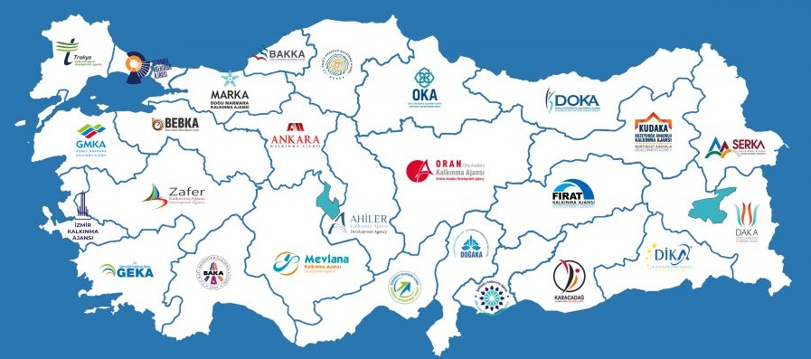

Türkiye’de Kalkınma Ajansları
Türkiye'de kalkınma ajansları, 2006 yılında çıkarılan 5449 sayılı Kanun ile kurulmuş ve bölgesel kalkınmayı desteklemek amacıyla faaliyet göstermeye başlamıştır. Her bir kalkınma ajansı, belirli
bir coğrafi bölgede faaliyet gösterir ve bölgenin kalkınma hedeflerine ulaşması için çeşitli projeler ve programlar yürütür. Türkiye genelinde 26 kalkınma ajansı bulunmaktadır ve her biri kendi
bölgesinin kalkınma ihtiyaçlarına yönelik çözümler üretir.

Kalkınma Ajanslarının Rolü
Kalkınma ajansları, bölgesel kalkınma ve ekonomik büyüme hedeflerine ulaşmak için çeşitli stratejiler ve programlar uygular.
Bu ajansların başlıca görevleri şunlardır:
- Bölgesel Kalkınma Planları: Ajanslar, bölgelerinin ekonomik ve sosyal gelişimini desteklemek için stratejik planlar hazırlar.
- Finansal Destekler ve Hibeler: Kalkınma ajansları, yerel işletmeler, girişimciler ve projeler için finansal destekler ve hibeler sunar.
- Yatırım Teşvikleri: Bölgesel yatırımları teşvik etmek amacıyla çeşitli yatırım teşvik programları geliştirirler.
- Proje Yönetimi ve Destek: Ajanslar, yerel projelerin planlanması, uygulanması ve izlenmesi konusunda destek sağlar.
- Eğitim ve Kapasite Geliştirme: Yerel işletmelerin ve kurumların kapasitelerini artırmak için eğitim programları düzenlerler.
- İşbirliği ve Ağ Kurma: Kalkınma ajansları, yerel, ulusal ve uluslararası düzeyde işbirlikleri ve ağlar kurarak bölgesel kalkınmayı destekler.
Kalkınma Ajansları Danışmanlık Hizmetlerimiz
Aslan Teşvik Danışmanlık olarak, kalkınma ajanslarının sunduğu fırsatlardan en iyi şekilde yararlanabilmeniz için kapsamlı danışmanlık hizmetleri sunuyoruz.
Hizmetlerimiz şunları içerir:
- Proje Geliştirme ve Yazımı: İşletmelerin ve kurumların kalkınma ajansları tarafından sunulan hibe ve destek programlarına uygun projeler geliştirmelerine yardımcı oluyoruz. Proje
fikrinizin oluşturulmasından, başvuru dosyasının hazırlanmasına kadar tüm süreçlerde destek sağlıyoruz.
- Başvuru Süreci Yönetimi: Kalkınma ajanslarına yapılacak başvuruların doğru ve eksiksiz bir şekilde tamamlanması için gerekli tüm işlemleri yürütüyoruz. Başvuru formlarının doldurulması,
gerekli belgelerin temin edilmesi ve başvurunun takip edilmesi konularında tam destek sağlıyoruz.
- Proje Uygulama ve Yönetimi: Onaylanan projelerin başarılı bir şekilde hayata geçirilmesi için proje yönetim hizmetleri sunuyoruz. Projenizin planlanması, uygulanması, izlenmesi ve
raporlanması konularında profesyonel danışmanlık sağlıyoruz.
- Eğitim ve Kapasite Geliştirme: Kalkınma ajanslarının sunduğu eğitim programlarına katılımınızı kolaylaştırıyor ve işletmenizin kapasitesini artırmak için gerekli eğitimleri sağlıyoruz.
- İzleme ve Değerlendirme: Proje sürecinde ve sonrasında gerekli izleme ve değerlendirme çalışmalarını yaparak, projenizin başarısını ve sürdürülebilirliğini artırıyoruz.